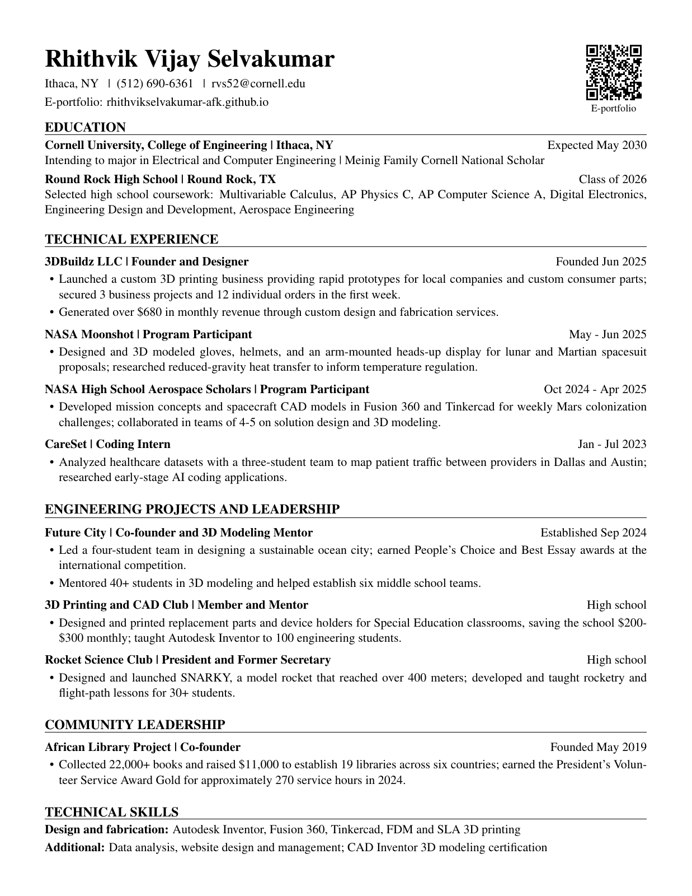

Cornell University, College of Engineering
Expected May 2030Ithaca, NY
- Intending to major in Electrical and Computer Engineering | Meinig Family Cornell National Scholar.
Qualifications / Résumé
Cornell Engineering, Class of 2030. Intending to major in Electrical and Computer Engineering. Meinig Family Cornell National Scholar.
Ithaca, NY
Round Rock, TX
Founder and Designer
Program Participant
Program Participant
Coding Intern
Co-founder and 3D Modeling Mentor
Member and Mentor
President and Former Secretary
Co-founder
View the full document or download a copy above.
